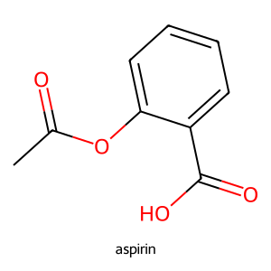
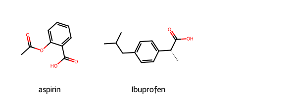

When I was learning to code, I found it frustrating. My journey took me across different languages by what I wanted to do and by recommendations by others. I found it easy to follow tutorials, but when I tried my own things, nothing ever worked. I stopped and started at least three times and I could never finish anything. It took a while, but I realized what the problem was - I needed to find my own project. As a student in cheminformatics, I was lucky that I have plenty of topics to choose from that will allow me to get better. It helps that, at their core, the topics all use similar toolsets.
But how does anyone start? Nothing complicated for sure. I started small and added complexity.
What better way to start than by learning how to draw molecules? It may sound dumb, but this is one of the most important tools to have in your pocket. Drawing one molecule in a graphical GUI program is easy. Drawing 10? 30? 50? Now that is just torture. Don’t do that to yourself!
So today I wanted to go over a basic skill - drawing molecules using RDKit.
Set Up Data
In this quick tutorial, we will draw 2 molecules. We’ll start small and get more complicated. I want to focus on drawing molecular structures for two drugs many of us may know - Acetylsalicylic Acid and Ibuprofen. Or for anyone well verse with the American market, aspirin and advil, respectively. The data is set up as follows:
data = {'name': ['Acetylsalicylic Acid', 'Ibuprofen'],'smiles': ['O=C(C)Oc1ccccc1C(=O)O', 'CC(C)Cc1ccc(cc1)[C@@H](C)C(=O)O']}df = pd.DataFrame(data=data)df
name
smiles
0
Acetylsalicylic Acid
O=C(C)Oc1ccccc1C(=O)O
1
Ibuprofen
CC(C)Cc1ccc(cc1)[C@@H](C)C(=O)O
Drawing the Molecule
Because I loaded up my dataset as a DataFrame, I will need to “slice” the table into a format for drawing. In this case, the important information is the smiles string. My brain works in Tables, but if you prefer, you can write out the smiles string directly for drawing the molecule, i.e. aspirin = ‘O=C(C)Oc1ccccc1C(=O)O’
Next, the smiles string will need to be converted an rdkit molecule object. This is done using MolFromSmiles() function.
NOTE If you print out the type of the img object, you will see that it is a PIL object. As such, it can be manipulated using the PIL Image module. I do not have much experience with that as I am normally quite happy with the default outcomes.
print(type(image))
Another cool feature is that you can add a legend to the individual images. In this case we can test it out for aspirin.
img = Draw.MolToImage(mol, legend='aspirin')img

Drawing a single molecule is all well and good, but what if we wanted to draw multiple molecules? The good news is that RDKit allows this with a MolsToGridImage() function.
To use this, pass a list of RDKit objects into function for drawing.
Drawing Molecules in a Grid
Those examples above are for single compounds. It is a great tool and, when we grasp more complex script, we can quickly draw multiple molecules by looping through a list of smiles strings. That is great, but depending on our aims, individual drawings might not cut it. Enter a neat tool by RDKit - drawing molecules in a grid!
It is as simple as drawing the individual molecules. All that is needed is a list of smiles strings. Like the previous example, more extra information can be added to the image. Here I kept it simple and passed a list of molecule names.
mols = [Chem.MolFromSmiles(mol) for mol in df['smiles']]MolsToGridImage(mols, legends=['aspirin', 'Ibuprofen'])

Conclusion
Just know that there are a lot of additional drawing options. If you could not tell, I like drawing images and plan on writing more depending on my schedule. In the meantime, it is good to practice these and thinking about how to add more functionality to it.
With RDKit, there are some easy to use tools baked in. You just need to know the right ingredients!